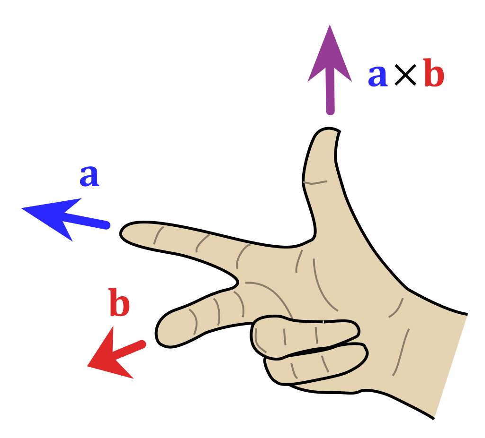
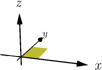
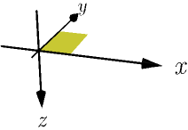
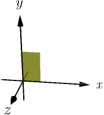
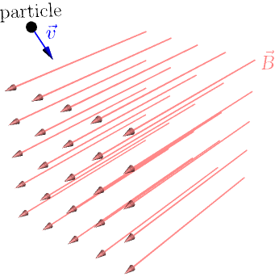
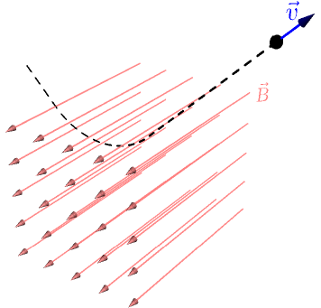

Defining Cross Product¶
The cross product is an operation that takes in two 3D vectors, similarly to dot product, but the result is a vector (the result of a dot product is a number). We define it like this: the cross product $\vec v \times \vec w$ is a vector whose
- direction is perpendicular to both $\vec v$ and $\vec w$, with right-hand rule used to choose one of the two perpendicular directions (see below), and
- length is the area of a parallelogram with $\vec v$ and $\vec w$ as sides.
The animation below shows how this definition works.
Right-hand rule¶
If the cross product vector is zero, i.e. if the vectors $\vec v$ and $\vec w$ don't form a visible parallelogram, the direction doesn't matter as the result is a zero vector anyway. If the cross product is nonzero, there are two directions perpendicular to both $\vec v$ and $\vec w$. In the above animation, these are up and down. We need a rule for choosing one of these directions to be the direction of $\vec v \times \vec w$. This rule is known as the right-hand rule.
Point the index finger of your right hand along $\vec v$ (first vector) and middle finger along $\vec w$ (second vector), making sure to extend your index finger out all the way as in the picture below. We define the direction of $\vec v \times \vec w$ to be the direction that your thumb points to.

This picture is from wikipedia.
You may need to rotate your hand to find the direction of a cross product. For example, in the above animation, you need to flip your hand around when $\vec v$ and $\vec w$ point in the same or opposite directions.
It's important to use your right hand for this. Using your left hand instead gives you the opposite direction, because it is a mirror image of your right hand.
Right-handed coordinate systems¶
For the right-hand rule to work, you need to ensure that you are visualizing the vectors in a right-handed coordinate system, like this one:

So if you look at the coordinates with $x$ axis pointing right and $y$ axis pointing away from you, as typical 2D coordinate axes drawn on a piece of paper on a desk would be, then the $z$ axis should point upwards. If the $z$ axis points downwards instead, the coordinate system is left-handed, meaning that you have a mirror image of a right-handed coordinate system:

When visualizing vectors this way, everything is mirrored, so you need to use a mirror image of a right hand (e.g. your left hand) to find the directions of cross products.
It is very rare to use left-handed coordinate systems, so doing cross products in a left-handed coordinate system will likely get you or someone else confused. For example, in many games the $z$ axis points a bit surprisingly backwards, towards the viewer. This is because the game developers want a right-handed coordinate system where the $x$ axis points right and the $y$ axis points up:

If the $z$ axis pointed forward, this coordinate system would be left-handed.
How area can be length¶
It may feel weird to define the length of a vector to be an area. Mathematically this is fine, because the area is a number and the length can be any number. In other words, the mathematics doesn't care about units: a number doesn't need to represents metres or square metres, it is just a number.
This doesn't mean that cross products are somehow useless, or useful only for "abstract" use cases. Once we have an easy way to compute cross products, we can use them to calculate areas in 3D and to find perpendicular directions. There are other ways to calculate areas and perpendicular directions, but they are usually more complicated than just calculating a cross product.
There are also plenty of uses for cross products where the resulting vector makes sense as a whole, and you don't use only the length or only the direction. We show one such use case below.
Cross products in physics¶
In physics, it's common for the "length" of a vector to represent something else than distance. Anything with a direction and an amount tends to be represented as a vector. Here are a few examples:
- The movement of an object is usually represented with a velocity vector $\vec v$. It points in the direction where the object is moving, and the "length" $|\vec v|$ is the speed of the object as metres per second.
- Let's try to move an object by pushing it. This can be described with a force vector $\vec F$. Its direction is the direction of pushing, and the length $|\vec F|$ describes how hard we push.
- A magnet creates a magnetic field nearby it. It is also possible to create a magnetic field using electricity. A magnetic field has a direction and a strength, so we can represent a magnetic field as a vector $\vec B$, where $|\vec B|$ is the strength.
Consider a particle that has some electric charge $q$. Let's shoot it into a magnetic field $\vec B$ with velocity $\vec v$.

Turns out that the magnetic field pushes the particle with force $$ \vec F = q\vec v \times \vec B. $$ I don't know why this cross product calculates the force, and I don't really care. Find a physicist if you are more interested in this than I am :)
Typically the charge $q$ is negative, so the vector $q\vec v$ points in the opposite direction of the particle, i.e. away from you and slightly up and to the left. Doing the right hand rule with $q\vec v$ and $\vec B$ involves rotating your right hand to a somewhat awkward position, but it shows that the force pushes the particle upwards. This causes the particle to lift when it is in the magnetic field.

This is how old TVs and monitors work: they have a CRT tube that shoots electrons and guides them with a magnetic field. The magnetic field is created with electricity, and the amount of electricity used affects $|\vec B|$. This way it is possible to control how strong the force $q\vec v \times \vec B$ is and guide the electrons to hit the correct places on the screen.